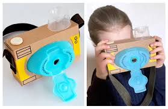

Proceso de Creación de Juguetes
En nuestra empresa, transformamos materiales reciclados en juguetes creativos y ecológicos. Nuestro proceso de creación está diseñado para ser sostenible y responsable, asegurando que cada juguete sea seguro, divertido y amigable con el medio ambiente.Pasos del proceso
- Recolección de Materiales: Recogemos plástico y otros materiales reciclados que serán transformados en juguetes.
- Diseño: Creamos diseños únicos y creativos para cada juguete, asegurando que sean atractivos y funcionales.
- Fabricación: Utilizamos técnicas innovadoras para fabricar los juguetes, siempre respetando los estándares ecológicos.
- Empaque y Distribución: Finalmente, empaquetamos nuestros juguetes de manera ecológica y los distribuimos a nuestros clientes.